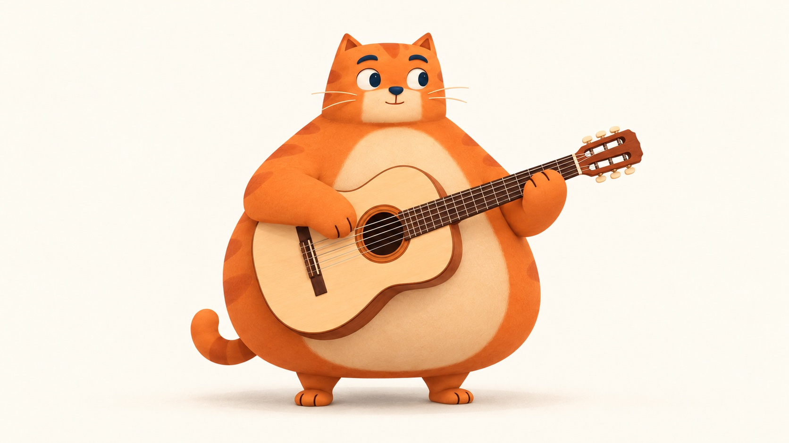

<!doctype html>
<html lang="zh-CN">
<meta charset="utf-8"><meta name="viewport" content="width=device-width,initial-scale=1">
<title>橘猫吉他 · 完整静帧</title>
<link rel="stylesheet" href="./style.css">
<main>
<header><span class="mark">miao / beat</span><span class="tag">完整静帧 · 动作待补</span></header>
<h1>旧动作实验已撤下。</h1><p>这张图包含完整的猫、手臂和吉他。目前只展示静帧，新的整图演奏动作还在制作。</p>
<div class="stage"></div>
<p class="note">旧版分离手臂实验不再执行，历史记录仍保留在源代码中。</p>
<footer><a href="../../">返回 Miao Beat 演奏 →</a></footer>
</main></html>
